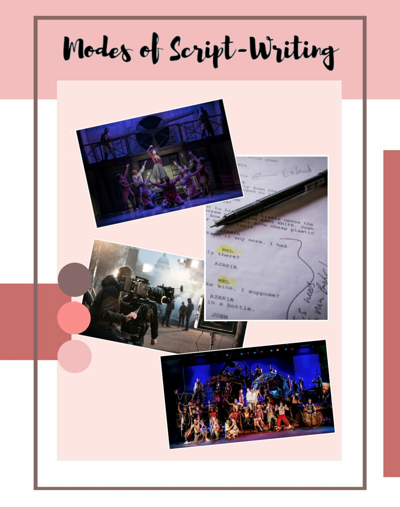

Stage-Script vs. Filmscript – The Never-Ending Battle

Anyone who has ever thought of writing a script wonders – what is the difference between writing for a play at the theatre, and a full-length movie that people can watch from home?
While an expert can go on and on and on about this topic (trust us, we’ve heard ‘em), we’re here to argue a controversial take: that without a few key elements, the two things might as well be the same.
“The same”?! You gasp. How could movies and theatres be the same? They invoke incredibly different emotions and reactions – so writing them should be completely dissimilar, too.
Right?
Not wrong, certainly – but not completely right, either. However, that does give enough grounds to show you how these two end up being different in the process.
The Scope
Here, we have one of the greatest differences between film and theatre, and the one difference that depends entirely on the writers – much more so than it depends on the executing actors or the directors.
Why don’t we begin with theatre?
In plays, the scope is limited. Plays can only ever be in one place; the theatre. Sure, the crew can change settings constantly between different scenes, but they always have to keep in mind the same concern. After all, barging onto stage, interrupting the flow and pace of the story may no doubt lead to a terrible execution. So, the scope is limited, and success depends on the how well and truly the writer manages to convince the audience through the use of dialogue and exposition.
Movies, on the other hand, can be filmed at various places around the world and not limited by the place they must be performed in. The multitude of these possibilities broadens the scope and allows the writer free reign on what to write, making it an unlimited piece in comparison to the playscript.
And yet, one can argue that it also hinders the project. After all, in limitations comes genius; thinking up ways to artfully show your story despite its constraints hones your skill like no other.
The Implementation
When it comes to the differences in implementation, some are obvious while some stumble in murky waters, not exactly true differences. Yet, those are exactly what we will be tackling here.
The obvious ones you must already have a notion of – Plays are performed in theatre, on stage, live. Multiple times. Movies aren’t shown live and are able to be performed in a variety of locales, filmed only once, and then are shown off to the rest of the world for however many times they wish to see it.
Yes, a lot of differences in execution.
But there is one more difference we must consider, and something you may not have thought of.
Concision versus Elaboration in the world of dialogue and exposition.
In theatre, one would not hesitate to say that plays are dominated by dialogue. Why, those of the audience in the back can’t see the minute details of the beautifully engineered setting, can they? No, their attention is controlled by who is speaking and what they are saying. Therefore, in theatre, the writer must elaborate for the entirety of the play hangs in the balance of artful conversations and beautiful speeches.
For films, it goes without saying that they are visual in nature. Screened and shown at any place in the world, they focus superbly on the details that the audience will, in fact, notice (and the hidden gems they would want to analyze after). Since they are able to utilize functions such as action scenes, flashbacks, fancy camerawork, and more, film writers have no need to focus on dialogue. In fact, in movies, concision is key.
The Audience
The audience is the most important aspect for either theatre or film as a defining commonality.
While this is true, the nature of the audience remains different, and therefore dictates how a write should portray their characters in either creation.
For theatre which has to be performed live, the actors must execute the play without the help of CGI, which severely limits what they can do. Therefore, the representation of beauty and sincerity, as well as the actual plot of the play must shine through the dialogue, the exposition, and the actors. This can only be done if written correctly, wherein the writer does not depend upon sets and backgrounds to tell his story.
For films, the camera is the audience, and once perfectly executed, can save the moment forever. Movies also use special effects and CGI, which allows the writer to write as they wish. Here, they must show the story through the vision on the screen and not just through the dialogue.
As you can see, the two applications of script writing while not completely different, do have elements that signify which script belongs to which category. This, in the end, makes all the difference.